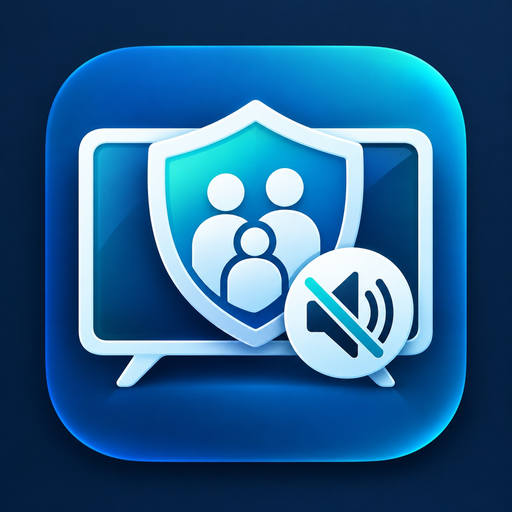

How to mute swearing on Google TV and Android TV
Four steps and about five minutes: install Family Filter TV on your TV and your Android phone, link them, and the swearing is muted while the picture keeps playing. The first 14 days are free.
After the trial you choose a 30-day or 1-year plan; current prices are shown in Google Play.

See it first
The steps
Check you have an Android TV or Google TV. Press Home on your remote. If you see Google TV, or the Google Play Store among the apps, you are set. You also need an Android phone (Android 7.0 or newer). Not sure? See Will it work on my TV? Samsung and LG smart TVs are muted from the phone over your home Wi-Fi instead.
Install Family Filter TV on the TV and on your phone. Install it from Google Play on both. If the Play Store on your TV does not list it, use the direct install. Open the app on the phone and sign in or create your account.
Link the TV to your phone. Open Family Filter TV on the TV to see a short code. On the phone tap Account, then Link a device, and type the code. Then choose a filter strength on the phone: off, mild, family or strict.
Pick how you watch: Stremio or follow-along. Stremio: in Stremio on the TV start any title, open the Player menu, choose External, pick Family Filter TV and tap Always. Anything you start in Stremio then plays already filtered (Stremio guide).
Netflix and other apps: on the TV open Family Filter TV, choose Follow along, then Open settings, and switch Family Filter TV on (once only). Start the film on the TV, then on the phone tap Home, search for the same title, pick it and tap Start following. If the phone asks for the microphone, tap Allow.
That is it. Your filter strength, and every TV you link, are managed from the phone. For the full walkthrough with troubleshooting, see Get set up.
What to expect
- The picture keeps playing. Nothing is cut, blurred or skipped; only the sound briefly drops.
- Muting is best effort: a line can slip through, especially in songs or where the subtitles differ from what is said.
- English titles only for now. If no subtitles can be found for a title, it cannot be filtered, and the app tells you.
- It mutes unwanted language only; it does not filter violence or nudity.
- It is not a streaming service. You watch with your own accounts; Family Filter TV is not affiliated with Netflix, Stremio or Google.
Questions
Can I mute swearing on Google TV without cutting the film?
Yes. Family Filter TV briefly lowers the TV sound for each line with unwanted language and the sound returns by itself. The picture keeps playing and nothing is cut, blurred or skipped.
Does it work with Netflix?
Yes, on Android TV and Google TV, in follow-along mode: start the title in Netflix on the TV, pick the same title in Family Filter TV on your Android phone, and the TV mutes the swearing. English titles only, and muting is best effort. Family Filter TV is not affiliated with Netflix and does not provide access to any streaming service.
Does it need the internet?
Yes. You sign in with an account, linked devices and your plan are kept against that account, and the subtitles for a title come from the video's own subtitle track or from Stremio's subtitle service. The streaming apps you watch need the internet as well.
Is the listening and matching done on-device?
The phone turns what it hears into words on the phone itself and compares them there with the subtitles. It only does this to find your place in a film, once you have allowed the microphone, and you can tap Stop at any time. Nothing it hears is stored or sent anywhere. See the privacy policy for what the account does store.
Does it also remove violence or nudity?
No. It mutes unwanted language only.
What does it cost?
The first 14 days are free. After that you choose a 30-day or 1-year plan, billed through Google Play, where current prices are shown in your own currency.
Related
Profanity filter for Google TV · Android TV guide and its limits · Mute swearing in Stremio, step by step · Mute swearing on Netflix · All questions